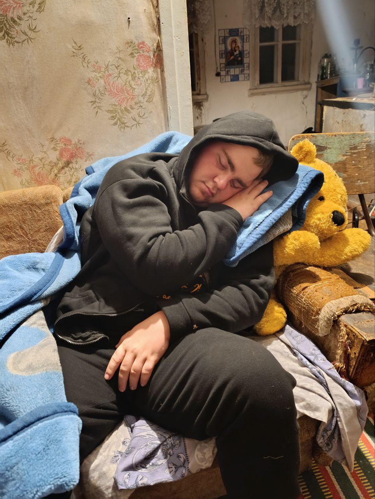
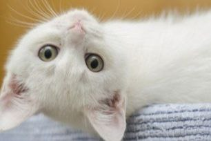
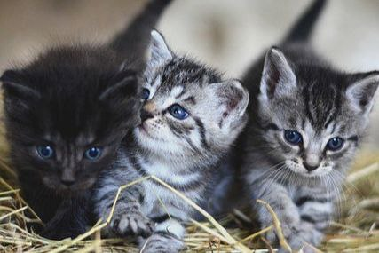
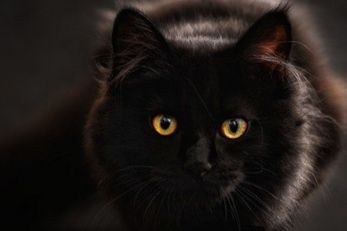
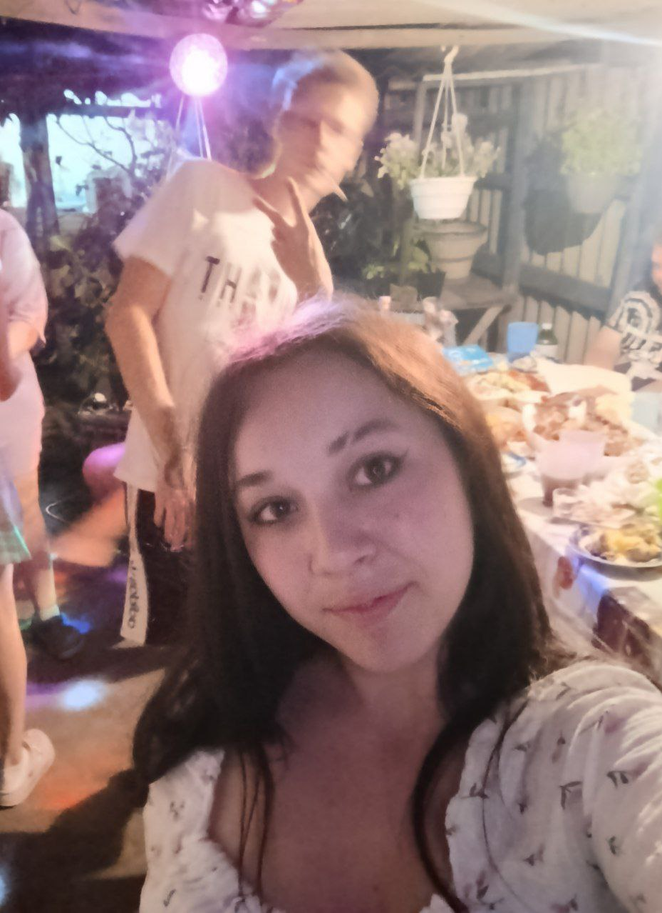
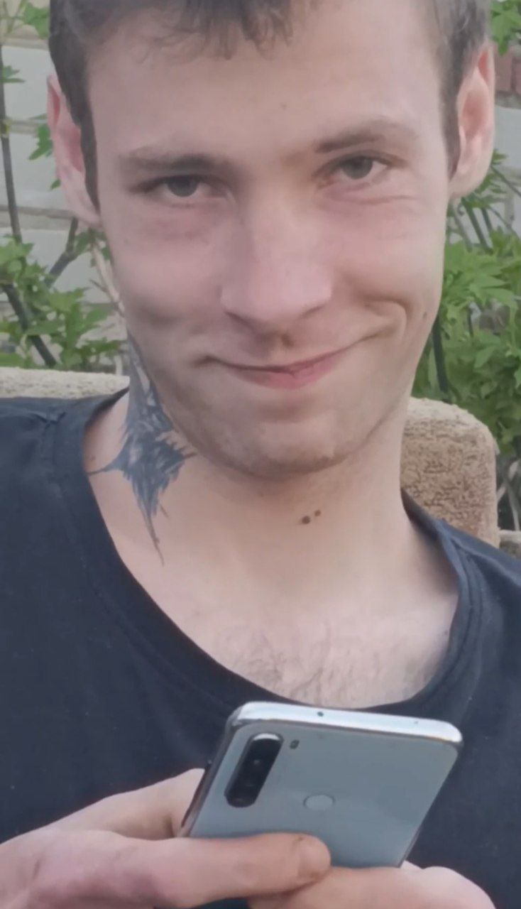
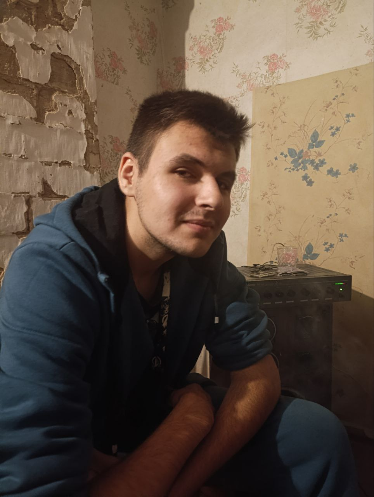

⚡ Состав БлохХати ⚡
Бодя — трудяга з токa, а також власник хати ⚙️. Любить пиво 🍺, але буде клястись, що то не так (хоч ми всі знаємо правду 😅). Може засидітися на хаті до 5-ї ранку, а вже о 7-й бути на роботі — справжній кіберпанк режим 🕒. Добрий, надійний і завжди свій чувак — саме той друг, якого не купиш ні за які гроші 🤝. Женя — бородач БлохХати. Працює на бригаді, але виглядає так, ніби тільки-но повернувся з Єгипту 🌴 (навіть якщо то просто рушник на голові). Катається на синьому Гольфі 5, який знає всі дороги краще за Google Maps 🚗. Поруч завжди його головний штурман і підтримка — дружина Катя ❤️. У компанії Женя — це той, хто може одночасно тримати телефон, жартувати і виглядати так, ніби він головний архітектор пірамід 🏜️. Катя — душа БлохХати 👑. Головна слабкість — солодке 🍫🍩, без нього день не день. Вона — жінка Жені ❤️, але є маленький секрет: коти Гришко і Циган для неї святіші за піраміди Єгипту 🐾 (і, може, навіть дорожчі за Женю… але це строго конфіденційно 🤫). У компанії Катя — це завжди настрій, затишок і «а де мій кіт?!». Крістіна — виглядає спокійною, але не завжди 😏. Любить трошки пригубити 🍷, але без перебору — знає свою міру. Майстер заробітку в інтернеті 💻💸 — поки всі відпочивають, вона шукає, де підняти кеш. Гарна співрозмовниця, з якою легко і весело поговорити, а ще вона завжди проти конфліктів ✌️, тому тримає баланс у компанії. Віка — офіційна кума Каті й Жені 🤝. Її фішка — «по трішки, але кожен день» разом з Богданом 🍷 (традиція свята). Вона завжди «за тусовку» 💃, бо без неї вечір не вечір. Любить музику настільки, що може танцювати навіть під звук бетономішалки 🎶😅. У компанії Віка — душа двіжу, яка заводить всіх навколо. Андрій — колишній головний п’яничка (ну, поки що 👀). Якщо є якийсь двіж — він там перший у списку ✅. За посадою — бос м’ясокомбінату 🥩, тож без шашликів з ним точно не обійдеться. А ще він такий співрозмовник, що з ним можна говорити і під пиво, і під чай, і навіть під тишу ☕. Влад — майстер несподіванок. Зовні спокійний, але то тільки рідко 😏. Його бойова машина — Анаконда-Славута 🐍🚗, на якій можна і в магазин, і на двіж, і хоч у пустелю до Жені. В компанії Влад завжди той, хто підкине жарту, підтримає сміх і скаже: «А давайте зробимо ще якусь х*рню!» 🤣.